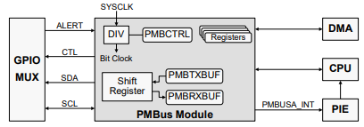
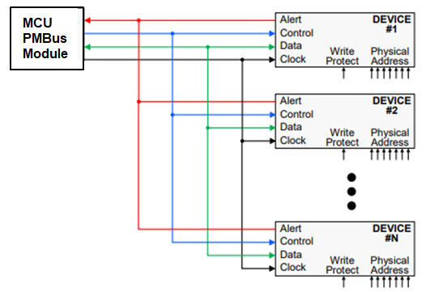

Power Management Bus (PMBus)#
PMBus is an open standard for digital communication between power converters and other components in power systems. The PMBus protocol is based on the I2C protocol and has several extensions that make it suitable for power management applications.
PMBus Module
Not all C2000 devices have a PMBus module. Refer to the Peripheral Reference Guide for a list of supported modules on your device.
Key Features#
Provides an interface between the MCU and devices compliant with the SMI Forum PMBus Specification:
Part I version 1.0 and Part II version 1.1
Enables a standard 2-wire communications protocol between power supply components
Based on SMBus and supports I2C mode
Uses a similar physical layer to I2C
Support for controller and target modes
Support for two speeds:
Standard Mode: Up to 100 kHz
Fast Mode: 400 kHz
Four-byte transmit and receive buffers
Packet error checking (PEC)
Conceptual Block Diagram#
SCL is the bus clock
Normally controlled by the controller; can be held low by a target to delay a transaction (to allow more time for processing)
SDA is the bidirectional data line
CONTROL is a target input that can trigger an interrupt
Can be used to tell a target device to shut down
ALERT is a target output/controller input
Allows a target to request attention from the controller

PMBus Connections#

PMBus Summary#
Provides a standard and flexible means for digital power management
SDA and SCL timings derived from SYSCLK (to comply with the PMBus timing specifications the bit clock must be set to 10 MHz or less)
Four-byte Transmit Data Buffer
Four-byte Receive Data Buffer
Clock high and low time-outs
CONTROL and ALERT signals
Resources#
Feedback
Please provide any feedback you may have about the content within C2000 Academy to: c2000_academy_feedback@list.ti.com